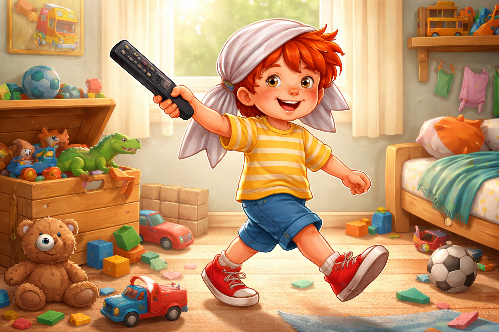
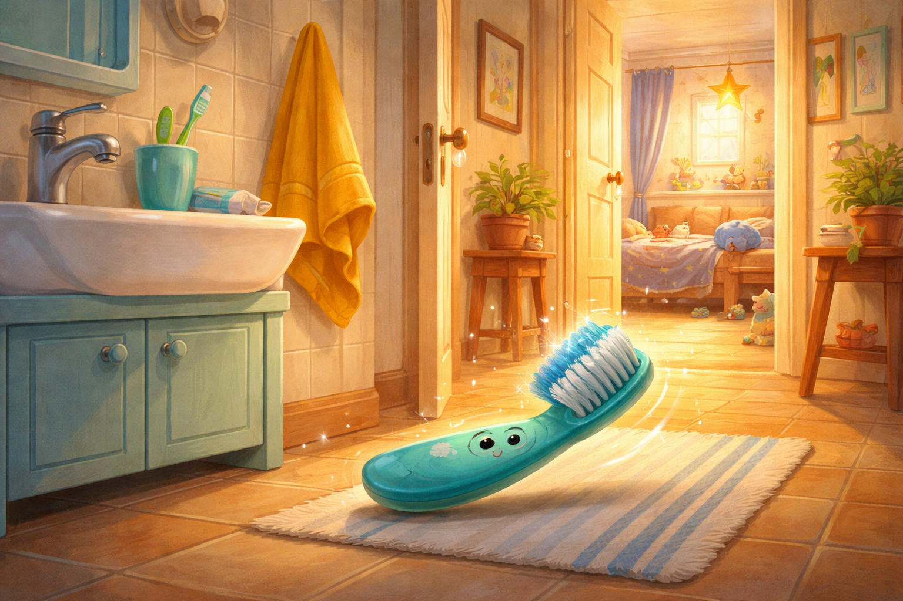
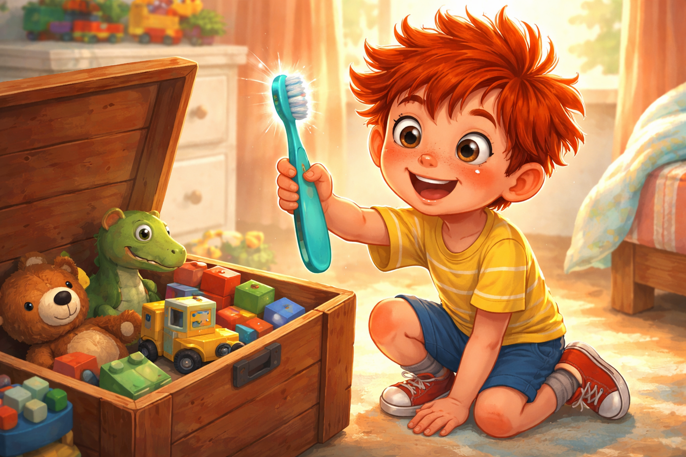
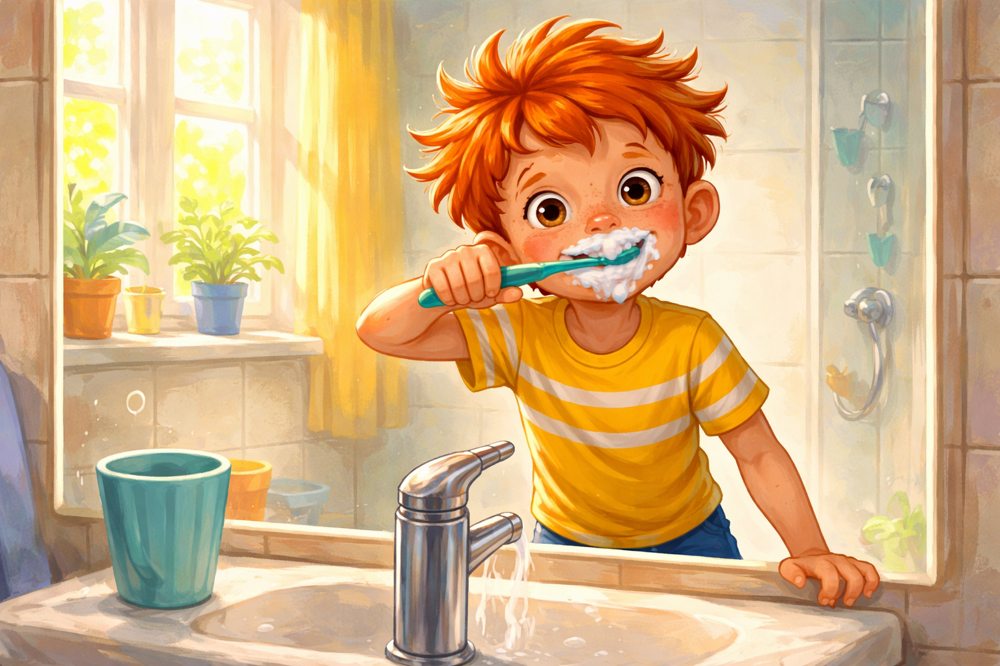
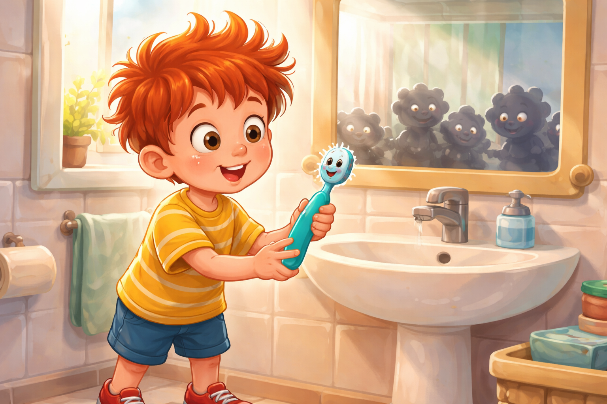
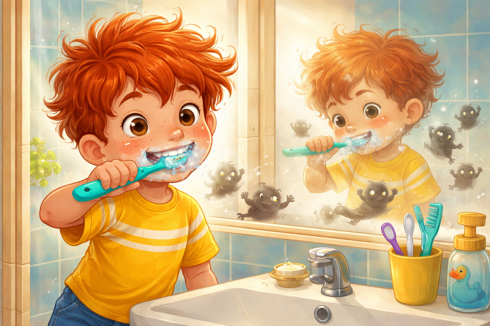
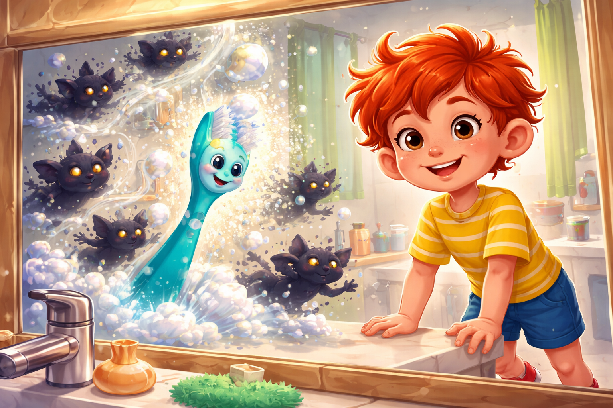
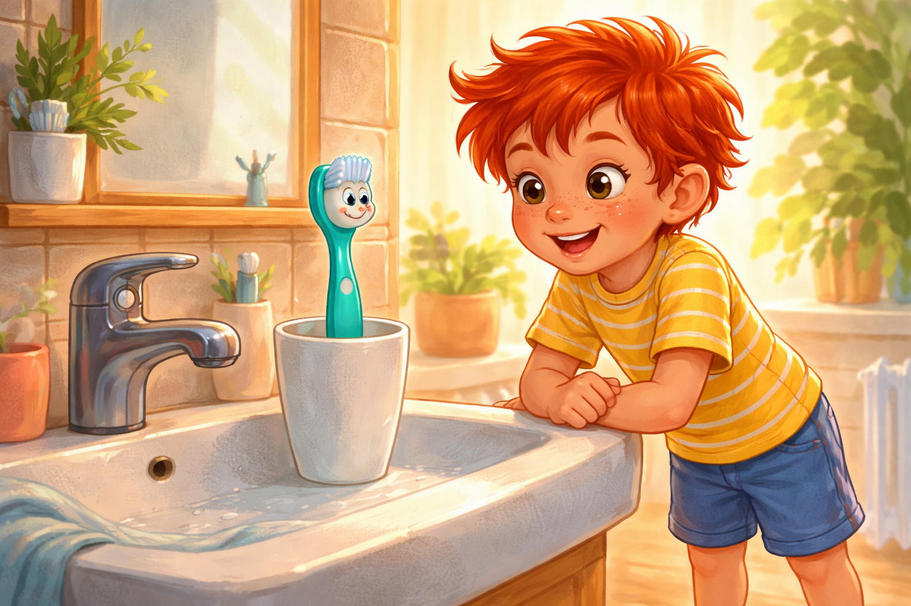

Палавко и четката-беглец
Здравей, аз съм Палавко - и пакостта ми е суперсила!
Днес ще ти разкажа историята за една четка, която избяга. Да, наистина. Четка за зъби!
Готов ли си? Хайде, слушай.
Сутрешната пиратска мисия

Беше сутрин. Будилникът звънна:
- Дрън-дрън-дрън!
Палавко се завъртя в леглото като палачинка. Едното му око се показа изпод завивката. После и другото.
- Ъъъх... още пет минути - промърмори той.
От коридора се чу добре познат глас.
- Палавко! Време е за миене на зъбките!
Беше мама.
Палавко изръмжа като сънен лъв.
- Всеки ден... сутрин и вечер... Ама това са едни и същи зъби!
После обаче очите му светнаха.
- Ами ако днес съм пират?

Той скочи от леглото, метна една тениска на главата си и тя веднага се превърна в пиратска кърпа. Хвана дистанционното като сабя и закрачи из стаята.
- Йо-хо-хо и бутилка портокалов сок! Аррр!
После сам се разсмя, защото прозвуча не като страшен пират, а като малко коте, което се опитва да бъде страшно.
В този момент погледът му попадна върху кутията с играчки.
- Пиратите трябва да търсят съкровища!
Палавко започна да рови. Извади динозаври, камиончета, плюшено мече с едно око, кубчета, книжка и един чорап, който изобщо не беше съкровище, но изглеждаше подозрително.
Бягството на четката

Докато Палавко спасяваше мече-пират от лапите на динозавъра, в банята се случи нещо странно.
Четката за зъби се търкулна от ръба на мивката. Падна на пода, завъртя се веднъж, после още веднъж, премина през коридора и стигна до детската стая.
Цоп!
Скочи директно в кутията с играчки.
Но Палавко не забеляза. Беше твърде зает да търси въображаемо съкровище.
След малко мама отново се обади:
- Палавко, не забравяй зъбките!
- Аха! - отвърна той.
Влезе в банята, погледна към чашката до мивката и замръзна.
- Ама къде е четката ми?
Погледна наляво - няма я.
Погледна надясно - няма я.
Погледна зад сапуна - само сапун.
- Не може да е избягала... Или пък може?
Палавко присви очи.
- Изчезнала четка? Имаме мистерия!
Провери под хавлията - нищо. Провери в коша за пране - само чорапи с динозаври. Накрая, разбира се, се сети.
- Играчките!

Разрови кутията. И там, скрита между плюшените герои и кубчетата, си лежеше четката.
- Аха! Агент Четко, заловен! - извика Палавко победоносно.
Мега-бързото миене

Той грабна четката и се върна в банята.
- Сега ще се мием! Мега-бързо! Рекордно време!
И започна.
- Раз-два, лява, дясна, отгоре, отдолу и... готово!
Цялото миене продължи не повече от десет секунди.
- Та-даа! - каза Палавко самодоволно. - Чист като сапунена пяна!
Но когато посегна да върне четката обратно, тя му се изплъзна от ръката.
Бум!
Падна на пода.
Палавко я вдигна, издуха прашинка и се намръщи.
- Какво ти става днес? Първо изчезваш, после скачаш от ръцете ми!
Гласът на четката

И точно тогава му се стори, че четката му отговаря.
Не. Не му се стори.
Тя наистина му отговори.
- Аз избягах - каза четката с тъничък, леко сърдит гласец.
Палавко я погледна с ококорени очи.
- Ъ?
- Да. Избягах. Омръзна ми да ме мажеш с паста, да ме въртиш като въртележка и да си тръгваш, преди да съм си свършила работата.
- Ама... ама аз...
- Знаеш ли колко микроби остават по зъбките ти след светкавично миене? - попита четката. - А знаеш ли колко кариеси се смеят тайно в тъмното, когато не успея да стигна навсякъде?
- Кариеси ли? - ахна Палавко.
В огледалото сякаш проблеснаха малки тъмни сенки. Те подскачаха, кискаха се и се опитваха да направят зъбките му своя детска площадка.
- Ей! - възмути се Палавко. - Зъбите ми не са площадка за пакости!
- Точно така - каза четката. - Ако искаш усмивка като слънце, трябва да работим в екип. Без бързане. Без мрънкане. И с кръгови движения.
Палавко се почеса по главата. Пиратската кърпа още висеше накриво.
- Добре де... Извинявай. Ще те използвам както трябва. Даже с кръгови движения!
- Браво - каза четката. - А сега да изгоним кариесите.
Зъбо-супергероят

Този път Палавко се зае сериозно.
Почисти зъбките си старателно - отпред, отзад, отвътре и отвън. Не бързаше. Движеше четката внимателно, сякаш рисуваше малки кръгчета по усмивката си.
Две минути минаха почти неусетно.
Дори си измисли песен:
- Търкай, четке, търкай смело, да блестим съвсем умело!

Кариесите в огледалото започнаха да се свиват.
- Ох, не! - писукаха те. - Тук вече е прекалено чисто!
Четката засвистя доволно, пяната заблестя, а зъбките на Палавко станаха толкова чисти, че той не можа да не се усмихне на себе си.
На следващата сутрин

На следващата сутрин Палавко се събуди още преди мама да извика.
Скочи от леглото и хукна към банята.
Погледна към чашката до мивката и се усмихна.
Четката беше там - подредена, изправена и готова, сякаш го чакаше.
- Добро утро - прошепна тя. - Готов ли си пак да сме екип?
- Готов съм! - отвърна Палавко. - И този път обещавам: без бързане.
С четката в ръка, песен в уста и усмивка до уши, той започна деня си като истински зъбо-супергерой.
Поуката
Не бързай с миенето на зъбките. Четката за зъби не е досадна - тя е твой приятел в битката с кариесите.
Когато се грижиш за себе си с въображение, дори най-обикновеното миене може да стане приключение.